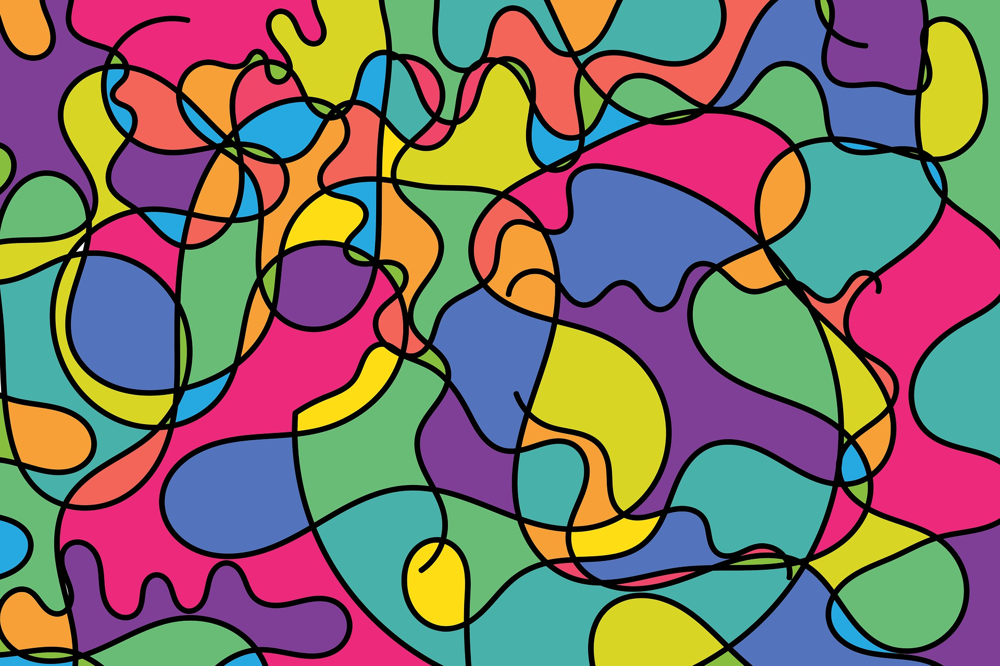

From the tapestry of obscurity emerges a revelation that defies silence. A symphony of whispers turns into a
crescendo, as the news unfurls its wings of intrigue. Unveil the enigma, for within lies a mosaic of change,
a tale both unexpected and extraordinary. Embrace the revelation, and let curiosity reign.

Quantum Worlds
Quantum mechanics, the enigmatic realm governing subatomic particles, tantalizes with its bewildering
principles of superposition and entanglement. Harnessing these quantum quirks offers a glimpse into
a future teeming with revolutionary technologies. Quantum computing, a field burgeoning with
potential, promises to solve complex problems that stump classical computers, sparking advancements
in cryptography, drug discovery, and optimization conundrums.
Quantum communication, riding on the bizarre phenomenon of entanglement, hints at secure data
transmission unbreakable by eavesdroppers, revolutionizing information exchange. Quantum
teleportation, not in the sci-fi sense but as a means to transfer quantum states between particles,
could shape the future of secure data transfer.
Yet, the quantum world dances on the precipice of the unknown. Its delicate nature requires
isolation from its environment, presenting formidable challenges for practical implementation.
Despite the hurdles, quantum works hold promise to recalibrate our technological compass, charting a
course toward a future where the boundaries of possibility are stretched beyond recognition. As
scientists thread through this quantum labyrinth, they navigate a tapestry woven with potential, a
tapestry that may hold the keys to unlock profound scientific mysteries and reshape the very fabric
of our technological landscape.
Books of Worlds
In a world dominated by fleeting digital distractions, the real value of reading books emerges as a
timeless refuge for the mind and soul. Beyond the pages and ink lies a magical realm where ideas,
stories, and knowledge intertwine, nurturing intellectual growth and empathy. Reading books is a
gateway to profound exploration, transporting us to eras and landscapes distant from our
own.
Through literature, we engage with diverse perspectives, enriching our understanding of the human
experience. It's a mental exercise, cultivating critical thinking and expanding our vocabulary. The
immersive nature of reading stimulates creativity, fueling the imagination to conjure vivid worlds
and intricate characters.
In an age of sound bites and rapid consumption, books encourage patience and deep contemplation.
They offer an escape from the relentless pace of life, inviting us to slow down and savor each
thought-provoking phrase.
Moreover, books are companions on the journey of self-discovery. Whether we find solace in a novel's
pages or enlightenment in nonfiction's insights, books provide a mirror to our own emotions and
aspirations. They grant us solace in solitude and camaraderie in shared stories.
Ultimately, the real value of reading books transcends the tangible. It's a pilgrimage for the mind,
an odyssey that nurtures intellect, cultivates empathy, and kindles the flames of imagination – all
while celebrating the timeless art of storytelling.
Time Posibilities
The notion of time travel, a fascinating blend of scientific theory and speculative fiction, has
gripped the human imagination for generations. While it remains a staple of science fiction
narratives, the possibility of traversing through time has been a subject of serious consideration
within the realm of theoretical physics.
Albert Einstein's theory of relativity laid the foundation for the concept by illustrating how
massive objects can warp the fabric of spacetime, leading to phenomena like time dilation. This
phenomenon has been demonstrated in experiments involving fast-moving particles, showing that time
passes more slowly relative to a stationary observer. However, the notion of using time dilation for
practical time travel remains a daunting challenge.
Theoretical constructs such as closed timelike curves and wormholes have been explored as potential
gateways to the past or future. Wormholes, in particular, are hypothetical tunnels that could
connect distant points in spacetime, theoretically allowing for shortcuts through the cosmos and
potentially enabling time travel. Yet, the stability of wormholes and the need for exotic matter
with negative energy density present significant theoretical and practical hurdles.
Furthermore, time travel raises paradoxes like the famous "Grandfather Paradox," where altering the
past could lead to contradictions. Theoretical solutions have been proposed, such as the idea that
events in the past would adjust to accommodate changes, or the possibility of a branching multiverse
where each action creates a new timeline.
While time travel remains a tantalizing concept, it currently resides more within the domain of
philosophy and speculative fiction than a tangible scientific reality. The complexities of bending
time and the potential consequences of tampering with the past challenge our understanding of the
universe's fabric, leaving time travel a captivating puzzle that continues to beckon adventurers of
the mind.